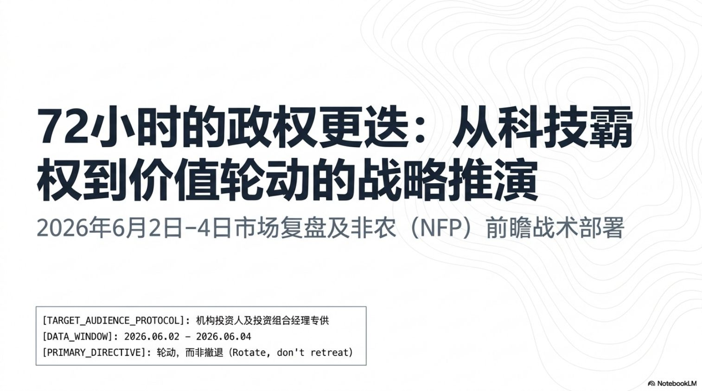

Comparative Analysis · June 2–4, 2026 · Prepared Jun 5
Flat on the Surface, a Regime Change Underneath
The S&P 500 lost just 0.33% across three sessions — while leadership flipped from narrow AI-hardware momentum to broad value, small-cap, and defensive rotation. Click through the days, sort the sectors, and weigh the bull case against the bear case below.
Strategy
Selective Sector Rotation
Leadership
Broadening
Preferred Style
Value · Quality · Small-Cap
Risk Level
Medium-High
Next Catalyst
Friday NFP + Wages
Day-by-day snapshot
Three sessions, three different markets
Select a day to load its closing data and regime read.
Index performance
Daily % change by index — the rotation in one picture
Day 2 hit everything; Day 3 split the market: Dow and Russell surged while the Nasdaq stayed red. Hover any bar for detail.
Day 1 · Jun 2Day 2 · Jun 3Day 3 · Jun 4
Net over the window: SPX −0.33% · Nasdaq Comp −0.97% · Dow +0.50% (record) · Russell 2000 +0.12% (best YTD index, +18.3%).
Condition ratings
Seven-category rating matrix
Click any row for the interpretation behind the rating.
Category
Day 1 · Jun 2
Day 2 · Jun 3
Day 3 · Jun 4
Direction
Sector rotation board
Eleven sectors plus semiconductors, across the window
Energy led or co-led all three days; semis went from kingmakers to casualties in 72 hours.
Sector
Day 1
Day 2
Day 3
Trajectory
Signal
Style rotation
Who gained leadership, who lost it
Bars show conviction of the 3-day shift as scored in the comparative report.
▲ Gained leadership
▼ Lost leadership
Two readings of the same tape
Bull case vs bear case
Toggle to stress-test the rotation thesis from both sides.
Strategy progression
How the strategy signal evolved day to day
All three daily reports converged on the same destination from different directions.
Strategy question
Day 1
Day 2
Day 3
Final decision
Strategic deck · 战略推演
72-Hour Regime Change — the companion slide deck
Ten-slide strategic briefing built on this analysis (Chinese). Navigate with the arrows, dots, or your keyboard · open the full PDF ↗

1 / 10
Watchlist
Key signals to watch next
Each signal expands into its bullish confirmation and bearish warning.
Final conclusion
The verdict
Hold aggregate exposure, hedge through NFP, rotate from cap-weighted tech into equal-weight, value, and small-cap.
Market condition
Neutral (cap-weighted) / Bullish rotation beneath the surface
Risk appetite
Mixed — rotating within equities, not fleeing; speculative froth deflating (Bitcoin −13–14% wk)
Leadership
Broadening — from Mag-7 / semis to value, small-caps, energy, healthcare
Preferred style
Value / defensive-quality with small-cap momentum; avoid pure growth-momentum
Hot NFP/wages → 10Y > 4.60% + Dec hike priced → multiple compression that also breaks the small-cap rotation
Strategy
Selective sector rotation
Risk level
Medium-High
Data gaps in source reports: exact Day 2/3 RSP closes, day-by-day ETF flows, dealer gamma quantification, Day 2 A/D ratios, credit spread levels. Source dates: HPE surge reported Jun 2 (+26%) in Day 1 report, Jun 3 (+19.5%) in Day 2 report.